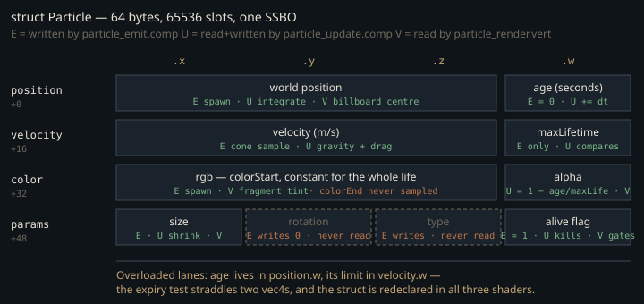

Monograph · Tree · ← Sitemap · Particle shaders
shaders
Particle shaders
Emit, update, render.
Four vec4s and no readback
The whole particle simulation is three shaders over one particle buffer, and nothing about a particle travels back to the CPU: the host writes at most 112 bytes of push constants per dispatch — emit's block, six `vec4`s and four words — and reads nothing.
layout(push_constant) uniform EmitParams {shaders/particles/particle_emit.comp:26State lives in a 64-byte record allocated once as 65536 `DEVICE_LOCAL` slots — exactly 4 MiB. Two more storage buffers sit beside it on the compute set, a four-word counter block and the indirect draw arguments; the render set binds the particle array alone.
if (!m_particleSystem->initialize(device, physicalDevice, 65536)) {ohao/render/deferred/deferred_renderer.cpp:106Two lanes are overloaded: current age sits in `position.w` while its limit sits in `velocity.w`, so the expiry test straddles two vec4s. Emit packs the rest into a fourth vector:
particles[slot].params = vec4(emit.lifetimeRange.z, 0.0, float(emit.particleType), 1.0);shaders/particles/particle_emit.comp:92
The type enum is written and never read — no shader branches on `params.z` — and rotation is written as a literal zero and never consumed. Deleting them buys no bandwidth on its own: update copies the whole 64-byte record before it tests liveness, so both dead lanes ride inside cache lines the pass fetches anyway, and only a repack under 64 B would show up.
Particle p = particles[idx];shaders/particles/particle_update.comp:44None of the four files uses `#include`, so `Particle` is declared three times independently even though `shaders/includes` is on the glslc include path: add a field to one copy and the other two still compile against the old stride.
COMMAND ${GLSLC} --target-env=vulkan1.3 -I${CMAKE_CURRENT_SOURCE_DIR} -I${CMAKE_CURRENT_SOURCE_DIR}/includes ${SHADER} -o ${SPIRV}shaders/CMakeLists.txt:46Sampling the cone, and why an explosion has poles
Emit builds a direction by rotating out of an orthonormal basis around the emitter axis. The basis seeds with world-up and swaps to world-x once the axis is within about 8° of vertical — the standard guard against crossing two near-parallel vectors, and it holds: the two presets that fire straight up take the world-x branch and come out with a well-conditioned frame.
vec3 up = abs(dir.y) < 0.99 ? vec3(0, 1, 0) : vec3(1, 0, 0);shaders/particles/particle_emit.comp:80The azimuth is uniform on $[0, 2\pi)$. The polar angle is uniform in the *angle*, not in solid angle:
float phi = r2 * spread;shaders/particles/particle_emit.comp:76With $\xi \sim U[0,1)$ the code draws $\varphi = \xi\,\varphi_{\max}$, whereas a uniform sample over the cone's solid angle requires
$\varphi$ is the angle from the emitter axis, $\varphi_{\max}$ the half-angle pushed as `emitDirection.w`. Since $d\Omega = \sin\varphi \, d\varphi \, d\theta$, drawing $\varphi$ uniformly gives a density per unit solid angle proportional to $1/\sin\varphi$: it piles particles onto the axis. On a narrow spray that reads as a hot core. On the explosion preset, which sets $\varphi_{\max} = \pi$ to mean "full sphere", that density diverges at *both* ends of the axis — every band of $\varphi$ takes the same expected share of the preset's 128 particles while the bands nearest the poles cover a vanishing solid angle:
config.emitCount = 128;ohao/render/particles/particle_system.cpp:599That still populates the whole sphere; what the sampler adds is a dense cap at each pole, not a pair of opposed jets — and since nothing in the tree spawns a burst, it is arithmetic, not an observation.
An allocator that only counts up
Slot allocation is a single atomic bump on a counter shared by every emit invocation:
uint slot = atomicAdd(aliveCount, 1);shaders/particles/particle_emit.comp:58An invocation whose slot lands past `maxParticles` subtracts its increment back off and returns, so the cursor is stable under contention. What it never does is go *down* for a particle that died: update flips the alive flag and increments a separate `deadCount` without releasing the slot, and the host resets the counters only once, at buffer creation.
So `aliveCount` is not an alive count. It is a monotonic emit cursor with a lifetime budget of 65536 particles per run — 512 bursts at the explosion preset's 128 — after which every emit dispatch allocates, overflows, undoes and returns empty-handed. Recycling would need a free list or a compaction pass; neither exists. `deadCount` has no reader at all.
The arena is also never cleared. The particle buffer is allocated `DEVICE_LOCAL` with no staging clear and no `vkCmdFillBuffer`, yet update reads `params.w` on all 65536 slots each frame, including slots the cursor has never reached. Vulkan leaves fresh device memory undefined; drivers zero pages in practice for cross-process isolation, and zero decodes as "dead". The pass is correct because of a driver habit, not because of the code.
Integrating with a linearised drag
Update runs one invocation per slot — 256 workgroups of 256, over the full arena however few particles are alive — and integrates velocity first, then position, making it semi-implicit Euler rather than the explicit kind:
uint32_t groupCount = (m_maxParticles + 255) / 256;ohao/render/particles/particle_system.cpp:504$\mathbf{g}$ is gravity, applied to $y$ only; $k$ is the drag coefficient and $\Delta t$ the frame time. The drag factor is the first-order truncation of the exact solution $\mathbf{v}(t) = \mathbf{v}_0 e^{-kt}$:
p.velocity.xyz *= (1.0 - update.drag * update.deltaTime);shaders/particles/particle_update.comp:67That truncation only tracks the exponential while $k\,\Delta t \ll 1$. At $\Delta t = 1/k$ the factor is exactly zero and one step annihilates velocity; between $1/k$ and $2/k$ it is negative, so the direction alternates each step while the magnitude still decays; only past $\Delta t = 2/k$ does $|1 - k\Delta t| > 1$ and the recurrence diverge. None of it is reachable as shipped, because the host discards the per-emitter values and hardcodes one global pair, 9.81 and 0.1, on consecutive lines:
pc.drag = 0.1f;ohao/render/particles/particle_system.cpp:496At $k = 0.1$ the sign flip sits at $\Delta t = 10$ s and divergence at 20 s. The hardcode is structural rather than lazy: update is one dispatch, one buffer, one push block, with nowhere to put a per-particle force. So authored physics is dead data, and the muzzle flash is where that would have bitten — its drag of 5 puts $1 - k\Delta t$ at exactly zero on a 0.2 s frame, stopping the flash dead in a single step:
config.drag = 5.0f;ohao/render/particles/particle_system.cpp:558The same one-way flow strands the rest of the config. `endSize` rides in `lifetimeRange.w` and `colorEnd` gets its own vector in emit's push block above; no shader reads either, and update cannot see them at all — its push block is four floats. Size therefore follows a hardcoded curve to half its start value:
p.params.x = startSize * (1.0 - lifeRatio * 0.5);shaders/particles/particle_update.comp:77Colour is stranded differently rather than frozen. `color.rgb` keeps `colorStart` untouched for the whole life, while `color.a` is overwritten every frame with $1 - \text{age}/\text{maxLifetime}$ — a fixed linear fade that ignores both ends of the authored gradient, `colorStart.a` included. Emit and update are consecutive dispatches inside `DeferredRenderer::render`, so a particle's authored alpha is gone before any vertex shader reads its record.
p.color.a = 1.0 - lifeRatio;shaders/particles/particle_update.comp:73Smoke shows the whole pattern at once: authored to grow from 0.1 to 0.5, to float on $-0.5$ buoyancy and to sit at 0.6 alpha, it shrinks, falls at 9.81, and renders at whatever the fade computes.
ParticleEmitterConfig ParticleSystem::presetSmoke(const glm::vec3& pos) {ohao/render/particles/particle_system.cpp:604Six vertices with no vertex buffer
The render pipeline declares an empty vertex input state; the vertex shader pulls from the same SSBO and expands a hardcoded table of six unit-quad corners into two triangles offset along the camera right/up axes the host pushes. The pass depth-tests against the GBuffer's depth and writes none of its own:
depthStencil.depthWriteEnable = VK_FALSE; // Particles don't write depthohao/render/particles/particle_system.cpp:353Culling is off, on the stated grounds that billboard quads are double-sided:
rasterizer.cullMode = VK_CULL_MODE_NONE; // Billboard quads are double-sidedohao/render/particles/particle_system.cpp:342That is belt-and-braces rather than a requirement: a fixed corner table expanded along fixed camera axes gives every quad the same winding, and a camera-facing quad is never seen from behind. In the same spirit the particle buffer carries a `VERTEX_BUFFER` usage flag nothing ever binds:
VK_BUFFER_USAGE_STORAGE_BUFFER_BIT | VK_BUFFER_USAGE_VERTEX_BUFFER_BIT,ohao/render/particles/particle_system.cpp:104The addressing is `gl_VertexIndex / 6`, which expects a flat draw of $6N$ vertices:
uint particleIndex = gl_VertexIndex / 6;shaders/particles/particle_render.vert:39The draw it gets is instanced. Update atomically counts survivors into the indirect buffer's `instanceCount`:
atomicAdd(instanceCount, 1);shaders/particles/particle_update.comp:82while the host pins `vertexCount` at six:
indirect[0] = 6; // vertexCount (6 vertices per billboard quad)ohao/render/particles/particle_system.cpp:481For a non-indexed draw `gl_VertexIndex` runs over `firstVertex .. firstVertex+vertexCount-1` *within each instance*, so it never leaves $[0,6)$ and `particleIndex` is always 0; the shader never reads `gl_InstanceIndex`. As wired, every instance redraws slot 0 on top of itself, and if slot 0 is dead the pass draws nothing. Each half is coherent alone — the shader wants `vertexCount = 6N, instanceCount = 1`, the buffer wants a `gl_InstanceIndex` lookup — but they are not the same scheme.
The target nothing reads
Two independent reasons keep this off screen. The first is that nothing spawns: `DeferredRenderer::spawnParticles` is the only path that queues an emitter config, and it has no caller in `ohao/` or `examples/`.
The second survives fixing the draw. The particle framebuffer's colour attachment is the deferred lighting pass's HDR output:
VkImageView hdrView = m_lightingPass->getOutputView();ohao/render/deferred/deferred_renderer.cpp:1029but post-processing — which owns bloom, TAA and tonemapping — prefers the SSS pass's output whenever `SSSPass` initialised, and `SSSPass` is created unconditionally at renderer init, released only if its own `initialize` fails:
m_sssPass->getOutputView() : m_lightingPass->getOutputView();ohao/render/deferred/deferred_renderer.cpp:621SSS runs at step 4.5 of `DeferredRenderer::render` and blurs the lit scene into an image of its own; particles draw at step 4.7, after that snapshot is taken, and nothing downstream reads the lighting output again. So on the default path the particle pass writes colour into a buffer post-processing never samples. Update and the indirect draw still run every deferred frame, over an arena where every slot is dead.
Why nothing sorts
Transparent billboards normally demand a back-to-front sort — the usual reason a particle system carries a per-frame radix sort over view depth. This one has none and needs none, because the blend is additive: source scaled by its own alpha, destination by one. {{cite ohao/render/particles/particle_system.cpp "blendAttachment.dstColorBlendFactor = VK_BLEND_FACTOR_ONE; // Additive"}} Addition commutes, so any draw order gives the same pixel; with depth test on and depth write off the pass is order-independent against itself and against the opaque scene. That order-independence is a property of the choice rather than its recorded motive — the only reason on the line is bright particles: {{cite ohao/render/particles/particle_system.cpp "// Alpha blending (additive for bright particles like sparks/muzzle flash)"}} The price is that particles can only add light: smoke's grey 0.5 brightens what is behind it instead of occluding it, and a higher alpha would only have brightened it further. Smoke is authored as media that occludes and this blend cannot express it, which reads as an unfinished blend mode rather than a trade taken deliberately.
The fragment shader shapes each quad into a soft disc, opaque to 0.6 of the radius and fading to zero at the inscribed circle, then discards near-zero alpha:
if (outColor.a < 0.01) discard;shaders/particles/particle_render.frag:23Under additive blending that discard buys nothing in colour — alpha 0 already adds zero to RGB. What it prevents is the alpha write: the alpha factors are (ONE, ZERO) with A in the write mask, so every surviving fragment *replaces* destination alpha, and without the discard transparent quad corners would stamp zeros across the HDR target's alpha channel.
blendAttachment.srcAlphaBlendFactor = VK_BLEND_FACTOR_ONE;ohao/render/particles/particle_system.cpp:362VK_COLOR_COMPONENT_B_BIT | VK_COLOR_COMPONENT_A_BIT;ohao/render/particles/particle_system.cpp:366Every property here follows from one decision: state is fire-and-forget GPU memory the CPU never reads. That buys a zero-sync simulation and costs slot recycling, per-particle forces, authored colour ramps, and any knowledge of how many particles are alive.
Contracts
- `aliveCount` is an allocation cursor, not a population; after 65536 cumulative spawns the emitter falls permanently silent.
- Update reads `params.w` across the whole arena, including slots never written — correctness rides on the driver zeroing fresh device memory. Add a `vkCmdFillBuffer` before trusting a new platform.
- `gl_VertexIndex / 6` addressing and a 6-vertex × N-instance draw disagree; fixing either side alone preserves the mismatch.
- Particles render into the lighting output, but post-processing samples the SSS pass output snapshotted two steps earlier — fixing the draw alone still yields nothing on screen.
- `Particle` is redeclared in all three shaders with no shared include — a layout change must land three times.
- `instanceCount` is reset by a host write at record time, not by a GPU command, and there is one indirect buffer rather than one per frame in flight.
- Per-emitter `gravity` and `drag` never reach a shader; `endSize` and `colorEnd` reach emit's push block and no shader reads them.
Source files
shaders/particles/particle_emit.compohao/render/deferred/deferred_renderer.cppshaders/particles/particle_update.compshaders/CMakeLists.txtohao/render/particles/particle_system.cppshaders/particles/particle_render.vertshaders/particles/particle_render.fragParent hub for the full pipeline narrative; this page is the file-level design unit. Sitemap · hover glossary terms anywhere.